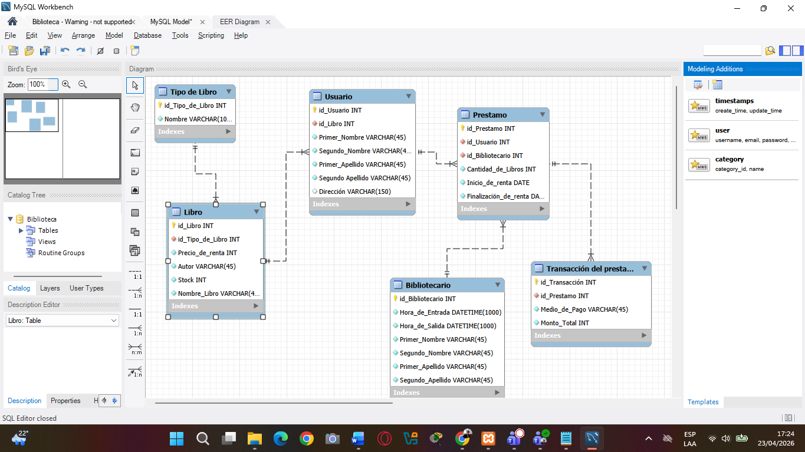
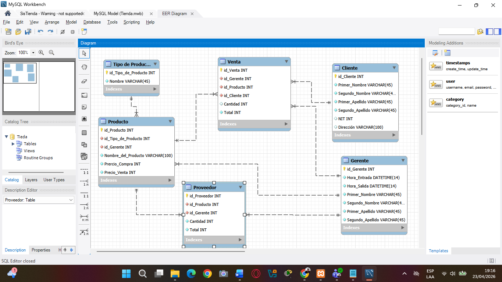
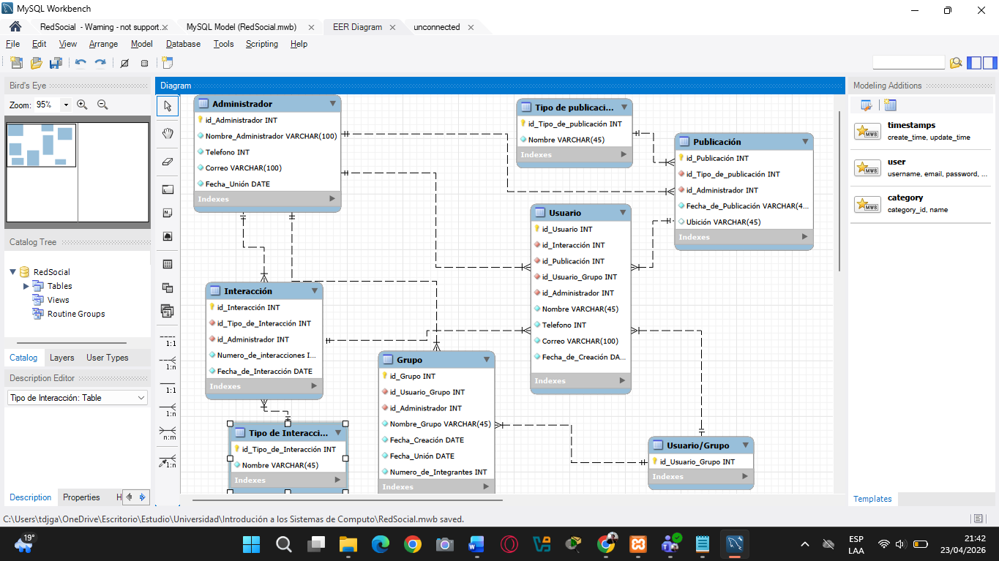

Bueno, para empezar, este proyecto consistía en analizar varios casos diferentes y convertirlos en bases de datos funcionales utilizando diagramas ER, scripts SQL y herramientas como MySQL Workbench y PHPMyAdmin. La idea principal era aprender cómo se diseña correctamente una base de datos desde cero, cómo se relacionan las entidades entre sí y cómo todo eso termina convirtiéndose en tablas reales dentro de un sistema. Además, todo debía quedar documentado mediante capturas de pantalla en un PDF, incluyendo los diagramas, scripts, tablas y registros insertados.
Sinceramente, al inicio parecía solo “hacer tablas”, pero mientras más avanzábamos nos dimos cuenta de que diseñar una base de datos tiene bastante lógica detrás. Porque no se trata solo de guardar información, sino de organizarla correctamente para que todo tenga sentido y funcione sin errores. Básicamente entendimos que una mala estructura en la base de datos puede terminar causando problemas en todo el sistema.
El primer ejercicio trataba sobre la gestión de una biblioteca. Aquí se analizaron entidades como libros, usuarios y transacciones de préstamo. La idea era registrar qué libros estaban disponibles, quién los prestaba y cuándo eran devueltos. Y sinceramente, fue interesante darse cuenta de que algo tan común como prestar un libro realmente necesita varias relaciones y registros funcionando al mismo tiempo para mantener toda la información organizada.

Después trabajamos el caso del control de inventario en una tienda. En este ejercicio se manejaban entidades como productos, ventas, clientes y proveedores. Básicamente la base de datos debía controlar qué productos existían, quién los compraba y qué proveedores los suministraban. Y ahí fue donde entendimos mejor cómo las empresas utilizan bases de datos prácticamente para todo, desde controlar inventario hasta registrar ventas y movimientos de dinero. ¿Cuántas veces uno compra algo sin pensar que probablemente detrás existe una base de datos registrando toda esa información?
